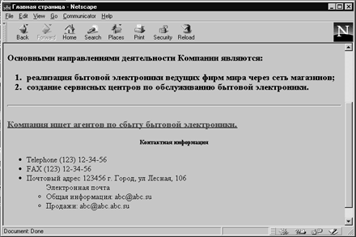

Списки являются важным средством структурирования текста и применяются во всех языках разметки. В НТМL имеются следующие виды списков: ненумерованный список (неупорядоченный), нумерованный список (упорядоченный) и список определений. Тэги для ненумерованных (Unordered Lists <UL>) и нумерованных списков (Ordered Lists <OL>) - это основа HTML. HTML 3.0 добавляет несколько атрибутов к тэгам списков для выбора разных типов маркеров в ненумерованных списках и разных схем нумерации в нумерованных. Можно включать такие атрибуты в сами тэги <LI> (List Item), чтобы сменить тип маркера в середине списка. После появления нового атрибута все последующие маркеры в списке будут иметь такой же вид.
Ненумерованный список. Ненумерованный список предназначен для создания текста типа:
Записывается данный список в виде следующей последовательности:
<UL> <LI> первый элемент списка <LI> второй элемент списка <LI> третий элемент списка </UL>
Тэги <UL> и </UL> - это тэги начала и конца ненумерованного списка, тэг <LI> (List Item) задает тэг элемента списка. В дополнение к этим тэгам существует тэг, позволяющий именовать списки - LН (List Header). Приведем пример отображения ненумерованного списка следующего вида:
Атрибуты маркеров в ненумерованном списке
Если вы не желаете применять одни и те же маркеры на разных уровнях вложенности, то используйте атрибут ТYРЕ=. Вы можете задать любой тип маркера в произвольном месте списка. Можно даже смешивать разные типы маркеров в одном списке. Ниже перечислены тэги с атрибутами стандартных маркеров
В HTML 3.0 вы можете вместо обычного маркера поместить GIF или специальный символ.
Атрибут РLАN=
Атрибут РLAN= создает ненумерованные списки без маркеров. Разумеется, простейший способ это сделать - воспользоваться списком определений, но если вы все же захотите вставить в список один-два маркера, то лучше применяйте данный атрибут.
Атрибут SRС=
Атрибут SRС= используется для того, чтобы задать GIF-файл вместо обычного маркера GIF, наиболее употребительный в HTML графический формат. Вместо того чтобы помещать GIF перед строкой с тегом <ВR> в конце, вы можете создать собственные изящные маркеры и затем использовать их в списке. В этом случае вы получите все преимущества ненумерованного списка и вдобавок симпатичные GIF-картинки в качестве маркеров. Атрибут SRC= можно задать в тэге <UL>, определив сразу все маркеры списка, а можно указать разные GIF для разных пунктов списка, помещая атрибут SRC= в каждом тэге <LI>. В любом случае для того чтобы атрибут SRС= работал с тэгом <UL>, нужно задать атрибут РLAN=.
Атрибут SRС= для тэгов списков очень нужен Web-разработчикам и способен сделать ваши страницы чрезвычайно привлекательными. Вместе с тем, его некорректное употребление приводит к исключительно уродливым страницам.
Атрибут DINGВАТ= [НТМL 3.0]
Атрибут DINGВАТ= позволяет создавать специальные типографские символы dingbats, поддерживаемые броузером. Эти символы имеют вид картинок, которые используются в качестве маркеров в списках. Приведем список стандартных dingbats:
Text, Audio, Folder, Disc drive, Form, Home, Next.
Для задания dingsbat нужно указать его имя в тэге <LI>. Например, для того чтобы задать home (домик), записывайте тэг <LI DINGBAT="home" >.
Dingsbat можно также применять с тэгом заголовка.
Нумерованные списки. Тэг <OL> вместе с атрибутом ТYРЕ= в HTML 3.0 позволяет создать нумерованные списки, используя в качестве номеров не только обычные числа, но и строчные и прописные буквы, а также строчные и прописные римские цифры. При необходимости можно даже смешивать эти типы нумерации в одном списке.
Пример 1.6. Использование тэгов различных списков.
<HTML> <HEAD> <TITLE> Главная страница</TITLE> </HEAD> <BODY> <H1 ALIGN=CENTER>Компания.</H1> <HR> <H3 ALIGN=LEFT><I>Открытое акционерное общество Компания основанная в 1996 году, является одним из ведущих поставщиков бытовой электроники в России.</I></H3> <HR> <H3>Основными направлениями деятельности Компании являются: <OL> <LI>реализация бытовой электроники ведущих фирм мира через сеть магазинов; <LI>создание сервисных центров по обслуживанию бытовой электроники.</H3> </OL> <HR> <H3><U><FONT COLOR=RED> Компания ищет агентов по сбыту бытовой электроники.</FONT></U></H3> <H5 ALIGN=CENTER>Контактная информация</H5> <UL> <LI>Telephone (123) 12-34-56 <LI>FAX (123) 12-34-56 <LI>Почтовый адрес 123456 г. Город, ул Лесная, 106 <UL TYPE=circle>Электронная почта<BR> <LI>Общая информация: abc@abc.su <LI>Продажи: abc@abc.abc.su</UL></UL> <BR><BLINK>Copyright</BLINK> љ 1997 Компания </BODY> </HTML>

Рис. 1.6. Использование тэгов различных списков.
Щелкните здесь, чтобы просмотреть пример 1.6 в браузере
Назад | Содержание | Вперед